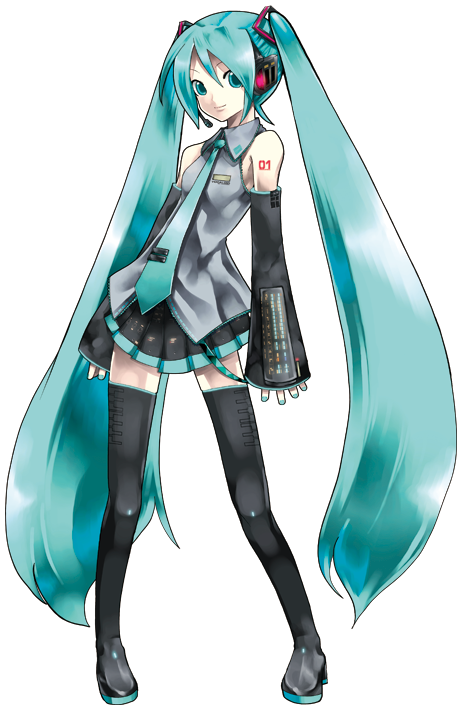

About
This is a fan-made page about vocaloids, composed by a couple of students (namely, Jacob B and Olivia) about the vocaloid software and media as a part of a school project. Vocaloid is a technology for singing voice synthesis - basically, it is a software that allows you to combine phonemes to make words; or rather, make voice banks produce words in the way that you want them to. In this way, vocaloids can be used to add song to music, just like any piano in a music program. More than 100.000 songs have already been made in Hatsune MIku’s name (Don’t know who she is? Why don’t you read this page!). The vocaloid software is owned by the Yamaha Corporation. You can find their website here! Or for those of you that do not speak Japanese, there’s an English version here.
This project took several hours and a lot of boredom.
So why don’t you go tell us how much you like it on Twitter with this fancy button: Tweet
All of the pictures used on this page have been used with non-commercial purposes in mind. Please respect that; and if you want to use this code of ours for something, there is a nice little license you can read beforehand, so feel free to do so!
Hatsune Miku
You may have heard of international cyber-diva and utahime, Hatsune Miku. If not, you haven't been around the internet enough. This virtual pop-star is massively popular inside Japan, but has also received quite a following outside the country as well. Her name is on more than 100.000 songs, with some of the most popular having millions of views. Her name, Hatsune Miku (初音ミク) (or Miku Hatsune for us gaijin) comes from three words; Hatsu (初) meaning first, ne (音 "ne" is another version of "oto") meaning sound, and miku (ミク) which means future. So the entire name means 'First sounds from the future'. Which is fitting, since she was the first voicebank to be developed by Crypton Future Media for use in Yamaha's VOCALOID2 program. The vocals used to make Hatsune Miku were given by the Japanese voice actress, Saki Fujita. She is also the first vocaloid to be given a persona. Hatsune Miku is depicted as a 16-year old girl, 159 cm old, with long cyan pigtails and cyan clothes, to fit with the Yamaha synthesizers' signature colours. Many vocaloids have since tried to do the same, as it was one of the things that made Miku so popular. Her design was deliberately without a personality, to make it easy for the artists to assign to her the personality that best fit the song. This has lead to many alternatives of Hatsune Miku - these are known as derivatives. Two well-known examples of this are Yowane Haku and Akita Neru, but many more exist.
Being the first vocaloid in her series, Hatsune Miku has since undergone many upgrades. She is currently in version 4, and has gotten an English voicebank besides her Japanese one. In 2010, an expansion for the basic voicebank was released, dubbed "Append". This expansion featured new varieties of Miku's voice, including things like "Sweet", "Vivid" and "Solid". These are slight changes in how her voice sounds, to better suit the situation she is used for.
Since her release, she has gotten massively popular, overshadowing the already existing vocaloids. Her early rise in popularity is largely attributed to the Japanese website called Nico Nico Douga. Nico Nico is a video-sharing service, not unlike YouTube, where users started to use the voice-synthesis program to produce their own songs. These songs became very popular very quickly, and the vocaloids spread to other parts of the world as well. Sega has made a series of rhythm games in Miku's name since then, called "Hatsune Miku: Project DIVA" featuring not only the main diva, but also a cast of vocaloids developed after this.
Hatsune Miku has also toured with live concerts, where people can pay to attend. These are done with a 3D projection of her on the main stage, while a band plays the music in real time. While these have only been done in Japan so far, a concert is currently being planned in the United States.
This especially noteworthy song is named "World is Mine" (ワルヅイズマイン - warudo izu main). With that song, she established herself, as quoted by Miku herself, as 世界で一番お姫様. Or in English, the world's number one princess.
Image Gallery

Image Credit
Main header picture is graciously provided by CHOK人 on hkgolden.
The images in the slideshow are released under a creative commons license, as per this site.

License
Contact us
For further business inquires, please contact us at rainbow@edu.aarhustech.dk. Sincerely, the Rainbow team.